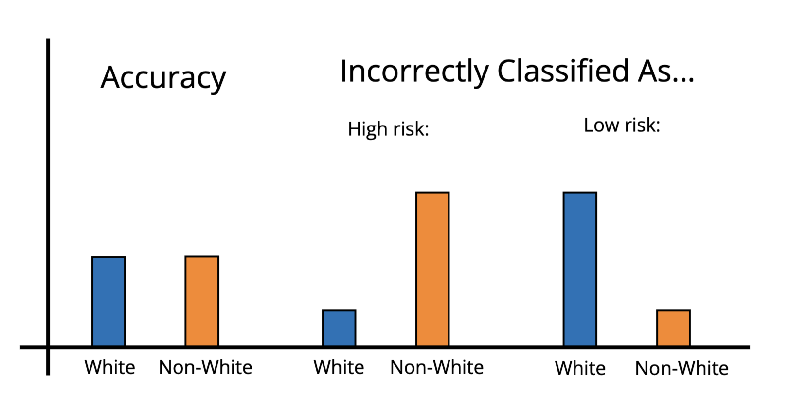

Crash Course: Algorithmic Bias
What is Algorithmic Bias and Why Does it Happen?
Algorithmic bias is when a statistical algorithm repeatedly produces ‘unfair’ outcomes, such as unfairly disadvantageing a particular group.
Algorithms are often introduced to systems to remove the fallible human elements that are perceived as inherently imperfect or biased. The algorithm is seen as a solution to human failing: a cool and rational machine that will always make a decision based on logic rather than emotion. However, this thought process can disguise algorithms that are just as biased—or more—as their human counterparts. Algorithms trained on real-world data internalize the real-world biases found in that data.
What does Algorithmic Bias Look Like?
One well-known example of algorithmic bias is the COMPAS algorithm, an algorithm built to predict likelihood of recidivism in people who committed a crime. The algorithmic inputs did not contain information about race, so many assumed that the algorithm must be unbiased, and more fair towards people of all races than potentially biased humans.
However, Angwin et al. took a closer look, they found that while the algorithm had similar accuracy rates across racial groups, its false positive rates were much higher for nonwhite people, and its false negative rates were much higher for white people. In other words, the algorithm was more likely to incorrectly predict a black person was a high risk, and incorrectly predict a white person was a low risk. The algorithm was biased against nonwhite people.

Caption: An illustration of what biased false positives and negatives look like
While the algorithm could not see race, race correlated strongly with many of the other factors in the dataset, such as income level and history in foster care. Because the humans whose decisions built the original dataset had made biased decisions, the model was rewarded for predicting recidivism in people who had indicators strongly correlated with race. The training data was racially biased, so the algorithm faithfully replicated that bias despite having no ability to detect race.
You can read more about the COMPAS algorithm here:
https://www.propublica.org/article/machine-bias-risk-assessments-in-criminal-sentencing
You can learn more about Amazon's hiring algorithm here:
https://www.reuters.com/article/world/insight-amazon-scraps-secret-ai-recruiting-tool-that-showed-bias-against-women-idUSKCN1MK0AG/
How Can We Identify, Mitigate, and Prevent Algorithmic Bias?
There are a number of techniques programmers can use to identify and reduce algorithmic bias. Checking for measures such as false positive and negative rate in addition to just accuracy across demographic groups is one way. There are a number of tools available to programmers that can test whether a model is unfairly paying attention to certain sensitive features. However, programming solutions are imperfect. Balancing the false positive and negative rate sacrifices accuracy. There is no perfect programming solution for biases that exist in the training data.
Collecting less biased data going forward is important. Many staple datasets contain and perpetuate outdated stereotypes. For instance, ImageNet is an old image-labeling dataset used as a starting point for many image classification nets. But this dataset contains category labels and associations we would consider offensive today. Continued building off models coded on this dataset carries those offensive connotations forward into new models. In order to completely eliminate these features, we would have to go back to the source. We would need to re-label the data, and retrain all the models that were previously trained on the old version. This would be incredibly difficult and time consuming to do.
Collecting and labeling better data is an important step, but it's not a perfect solution. Biases exist in the real world, and it’s impossible to completely disentangle the facets of reality we don’t want to capture from those we do. What’s more, datasets collected today will surely contain biases we don’t think are issues now, but will grow to realize are an issue as societal values shift.
With this in mind, it’s important for us to avoid unreservedly trusting the algorithms that exist in our daily lives, and to avoid putting them in positions of decision-making authority without accountable humans in the loop. Algorithms are only as good as their programming; perfectly programmed algorithms are only as good as their data; and data is only as good as the world it comes from. Algorithms cannot eliminate bias from life: they can only reflect and amplify the world we live in.